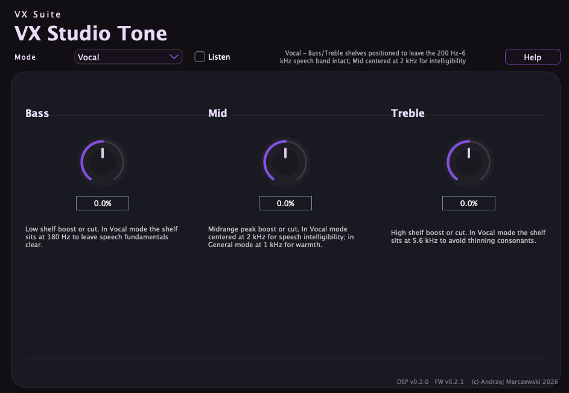
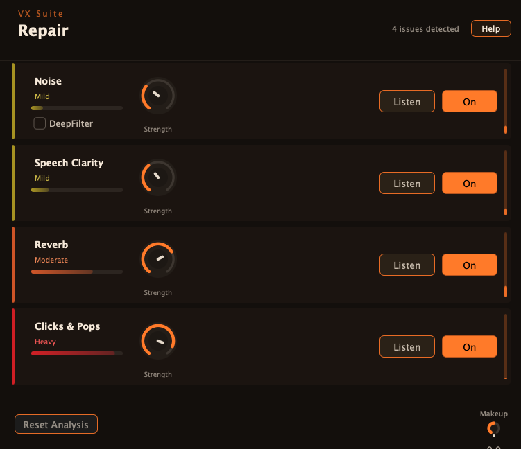
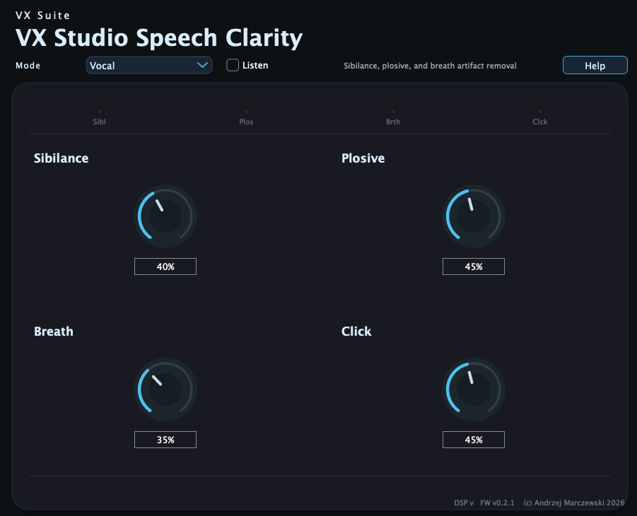

Current build installation steps for the VX Studio plugin suite.
Download the archive from Downloads, extract it, copy .vst3 bundles into /Library/Audio/Plug-Ins/VST3 (all users) or ~/Library/Audio/Plug-Ins/VST3 (current user), then rescan plugins in your DAW.
Download the archive from Downloads, extract it, copy .vst3 bundles into C:\Program Files\Common Files\VST3, then rescan plugins in your DAW. The build is CI-verified; end-to-end host validation is ongoing.
VXDeepFilterNet requires ML model files at runtime. Without them the plugin loads but no model is available. The model files ship inside the .vst3 bundle in the release archive; no separate download is needed.
Once the bundles are installed and rescanned, the suite opens into these familiar product panels.

A clean starting point for tonal shaping and vocal balancing.

Guided analysis surfaces common cleanup targets before you dial in the stages.

The compact layout still keeps the core speech cleanup controls intact.